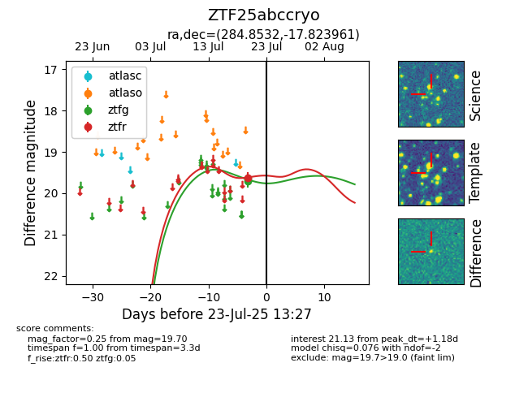

Target ZTF25abccryo at 2025-07-23 13:27, see:
FINK: fink-portal.org/ZTF25abccryo
Lasair: lasair-ztf.lsst.ac.uk/objects/ZTF25abccryo
ALeRCE: alerce.online/object/ZTF25abccryo
alt names
ZTF25abccryo (ztf,fink)
coordinates:
equatorial (ra, dec) = (284.8532,-17.82396)
galactic (l, b) = (17.7981,-9.73256)
photometry
last ztfg=19.70, ztfr=19.62
2 ztfg, 1 ztfr detections
